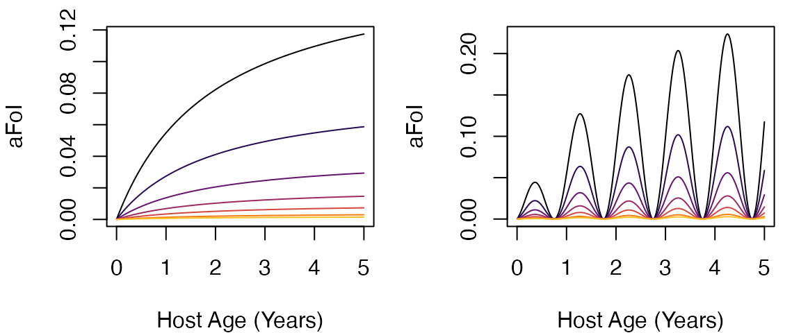

FoI.RmdWe want to be able to simulate arbitrary patterns of exposure in cohorts as they age, with the ability to compare two cohorts of different ages in the same population. We let \(h(t)\) denote the average daily FoI in a population, the hazard rate for infection. Notably, knowing the birth day for a cohort, \(\tau,\) we can convert between age and time using the identity \[t = a + \tau.\] We let \(\omega(a)\) be a function that computes a frailty term associated with age, so we can write the FoI for any cohort as: \[h_\tau(a) = \omega(a) h(a) = \omega(a) h(t-\tau).\]
We begin by constructing functions, \(h(t),\) to pressure test our models. We assume exposure has a seasonal pattern, \(S(t)\), and a temporal trend, \(T(t)\), and \[h(t) = \bar h \cdot S(t) \cdot T(t).\]
Motivated by the evidence for age-dependent exposure, the rate of exposure in a cohort is assumed to change with age. We use the age-weighting function, \(\omega(a)\), consistent with the available evidence from both anopheline and aedine mosquitoes (Port GR, et al., 1980;1, Carnevale P, et al., 1978;2, Liebman KA, et al., 20143) . Each cohort is indexed by its birth day, \(\tau\). The FoI at age \(a\) for the cohort born on day \(\tau\), which is at time \(t=a+\tau\), is defined for \(a>0\):
\[\begin{equation} h_\tau(a) = \bar h \cdot \omega(a) \cdot S(a+\tau) \cdot T(a+\tau) \end{equation}\]
We can thus compare exposure and infection for cohorts of different ages, of the same age at different times. We let \(H_\tau(a)\) denote the size of the cohort of age \(a\) born on day \(\tau\), and we note that for \(h(t)\) to be the average FoI for the population, it must be true that \[h(t) = \int_{-\infty}^t h_\tau(a) H_\tau(a) d \tau \] In most of our simulations, we compute quantities for single cohorts as they age, and we choose functions \(\omega(a)\) without worrying about this constraint. When we deal with the whole human population, however, we must enforce the constraint.
The FoI is defined as an S3 class
function that returns the FoI at ages a for a cohort with
birthdate tau, for a function defined by par.
The optional passed parameter hhat overrides the value of
hbar set in par when it is not
null:
\(\bar h\) or hbar
sets the overall level of exposure
\(S(t)\) or
seasonalFoI defines a seasonal pattern
\(T(t)\) or
trendFoI defines a temporal trend
\(\omega(a)\) or
ageFoI defines a change in exposure with respect to age
relative to the mean population FoI
plotFoI= function(h, FoIpar, tau=0, Tmax=5*365, clrs=NULL){
L = length(h)
if(is.null(clrs)) clrs = rep("black", L)
tms = 1:Tmax
tm = tms/365
plot(tm, 365*h[1]*FoI(tms, FoIpar, tau), type = "n",
xlab = "Host Age (Years)", ylab = "aFoI")
for(i in 1:L) lines(tm, 365*h[i]*FoI(tms,FoIpar, tau), col = clrs[i])
}
clrs8b <- viridisLite::inferno(8)
FoIfigure = function(hh=c(8, 4, 2, 1, .5, .2, 0.1)/365,
tau=0, clrs = clrs8b, Tmax=5*365){
par(mfcol = c(1,2), mar =c(4,4,1,1))
plotFoI(hh, foiP4, tau, Tmax, clrs)
plotFoI(hh, foiP3, tau, Tmax, clrs)
} 
G. R. Port, P. F. L. Boreham, J. H. Bryan, The relationship of host size to feeding by mosquitoes of the Anopheles Gambiae Giles complex (Diptera: Culicidae). Bulletin of Entomological Research 70, 133–144 (1980).↩︎
P. Carnevale, J. L. Frézil, M. F. Bosseno, F. Le Pont, J. Lancien, [The aggressiveness of Anopheles gambiae A in relation to the age and sex of the human subjects]. Bull. World Health Organ. 56, 147–154 (1978).↩︎
K. A. Liebman, et al., Determinants of Heterogeneous Blood Feeding Patterns by Aedes Aegypti in Iquitos, Peru. PLoS Negl. Trop. Dis. 8, e2702 (2014).↩︎